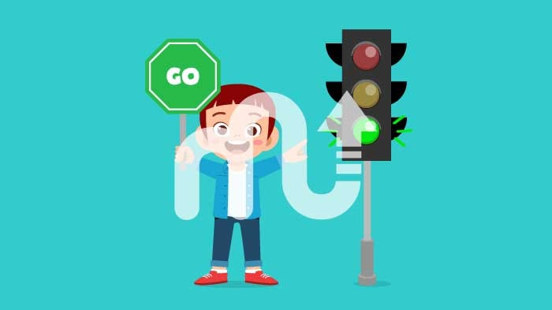
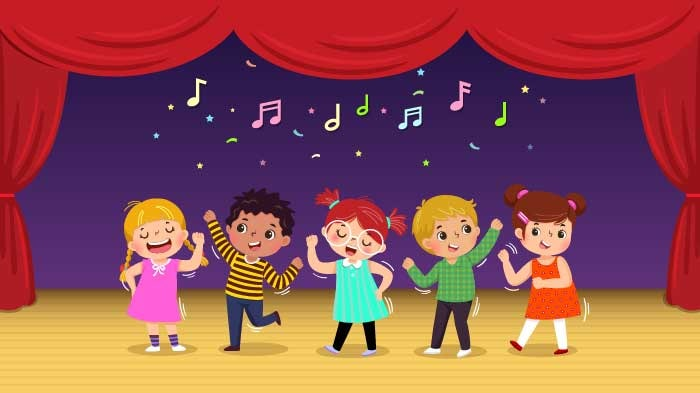
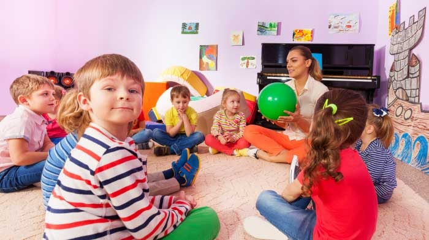
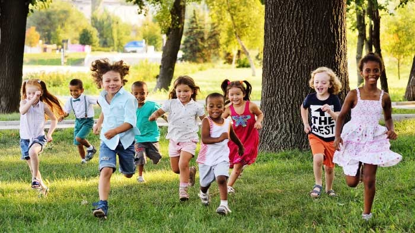
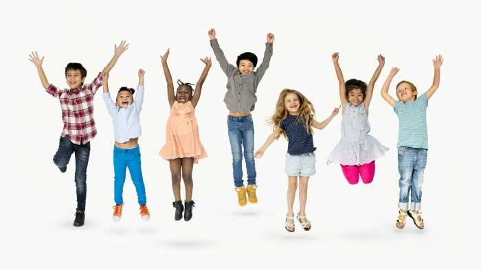
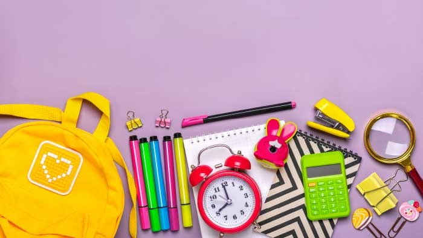
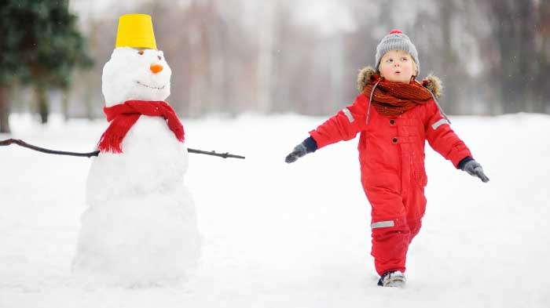

Attention Games for Adults and Kids
Logic Balls
This focus game for kids improves reasoning, planning, and focus skills.
Spot the Difference
Visual attention activities improve kids’ visual attention, visual scanning, and comparison skills.
Dwarf Giant
Divided attention games like this, improve kids’ reaction control, divided attention, and focus skills.
Pick Your Candy
Games for attention: This one improves reaction control, focusing, and divided attention skills.
Free Attention Games for Kids
Have I Seen It or Not?
This focus game for students improves visual memory, sustained attention, and visual recognition skills.
Shadow Match
Attention games online are a great way to practicing visual attention, visual scanning, and reasoning skills.
Mirror Game
These kinds of attention games for kids improve visualization, visual attention, and comparison skills.
Same and Different
This attention training game improves sustained attention, visual recognition, and short-term memory skills.
Kids love—parents trust. Named among the best in family-friendly products by U.S. Teachers and Moms.
The convenience of MentalUP’s content to the UK curriculum has been proved by the Education Alliance Finland.
MentalUP has been qualified to get EVIDENCE of IMPACT Award by University College London for its academic contribution.
Loved by over 10 million users. Join millions of parents, teachers, and kids all around the world.
It’s a safe, fun world for kids. There are no ads or inappropriate content either.

Online Attention Games to Improve Focus and Attention
Follow Me
Sustained attention activities for adults to improves sustained attention, visual tracking, and spatial memory skills.
Shape Matching
This attention to detail games for adults improves visual attention, visual scanning, and comparison skills.
What Changed?
This attention exercise game improves visual attention, visual memory, and visual scanning skills.
King of the Shadows
This is the most loved one among the visual scanning games for adults! It improves visual attention and visual scanning skills.
Attention & Focus Exercises for Kids
There are so many focus exercises for kids that can be both beneficial and fun! Listening to the instructions, memorizing them, and playing according to these directions are excellent ways for attention development. Also, they can function as workouts for kids.
All these games are suitable for children and can be adapted as focus exercises for students in classrooms.
1. Traffic Lights

- An adult moderates this game at the beginning and joins the game with the role of "the traffic light."
- The adult stands in the opposite direction of the children to give them enough area to go and stop according to traffic lights.
- In this game, red and green colors can have universal meanings as "go" and "stop." If you prefer more challenging visual attention exercises, you can choose different colors such as pink for the "go" direction and yellow for the "stop."
- If children move during the stop sign or stop when they need to move, they must go back to the starting point.
- Once all the kids understand the rules, the adult can stop playing and give them a chance to be the traffic light with different colors.
2. Freeze!

"Freeze!" is one of the best attention exercises for kids.
- All the kids start dancing when the music plays.
- As soon as the music stops, all children must freeze!
- Children can dance with funny dance moves to make this game more entertaining.
3. Peanut Butter & Jelly Balls

- You need two different balls for one of the most popular attention exercises for kids.
- One ball represents peanut butter, and the other represents jelly.
- Make children sit together in a large circle on the floor.
- The game's primary goal is throwing the peanut butter ball and rolling the jelly ball.
- According to these directions, the kids throw or roll the balls to a random kid from the circle.
- The ones who receive the balls should keep doing the same.
4. Elephant Herd

This game is one of the fun attention exercises for students. You can improve their concentration ability with these kinds of competition games for kids.
- The teacher asks the children, "What's that I hear?"
- The children answer as "Elephant Stampede!"
- The teacher asks again, "Where are they? Are they close or distant?"
- The students say that they are far away and start to act like elephants by stamping their feet and making the sound of elephants. They must not be too loud because the elephants are in the distance.
- When the teacher asks, "Where are the elephants?" The students keep acting as a herd and come closer. The sound of the children becomes noisier until the teacher says, "I hear that they are leaving."
- Then the children make the sound more quietly, up to the time the teacher says the elephants are completely gone.
- To make this focusing exercise more challenging, the teacher can group students as different animals like elephants and lions. Then, the teacher can give more complex directions like "the lions are coming, but the elephants are going away."
5. Beat the Drum

It is one of the most entertaining exercises to help kids focus.
- Drum beats can represent several actions such as clapping, walking, jumping, or dancing.
- When the children hear the fast beats, they can respond with the action you decide. When the drum beats get slower, they can make the other move you choose.
- For example; kids can run with fast drum beats and jump with slow drum beats.
6. Simon Says
- One child is the leader (Simon) and decides which actions kids will do.
- The other children listen to Simon, and when the leader says, "Simon says, meow like a cat!" they start doing it.
- If the leader only says "meow like a cat!" without saying "Simon says," then the players shouldn't do it. The ones who do can change groups if there are two groups instead of being out until the next game.
- To make Simon Says more challenging than other focus exercises for students, the leader can serve complex commands like "Turn around, clamp your hands, and jump three times!"
7. Go Bananas!
This game is an excellent exercise to make kids learn actions.
- With the direction "Grow bananas, grow grow bananas!" Kids should raise one arm overhead. After they do it slowly, they repeat the action for the other arm.
- "Peel bananas, peel, peel bananas!" - It's time to lower one arm, then the other.
- When kids hear "Mash bananas, mash, mash bananas!" kids should stomp on the floor.
- "Go bananas, go, go bananas!" Children should jump up and down and go bananas!
- You can serve speed commands as "How slowly can we peel bananas?" to make this game more entertaining.
8. Kim’s Game

This game is one of the most excellent focus exercises for kids and even for adults! Because it functions as one of the most effective strategy games for kids.
- Collect 20 items from the classroom or home. These can be anything like a spoon, a key, a coffee cup, etc. If you are at the school, arrange a hairpin, an eraser, a pencil, etc.
- Children should observe these items for 30 seconds, then cover them.
- There are two ways to play this game:
- You can ask the children to remember these 20 items one by one in a limited time.
- You can remove one of these items and ask them which one is missing!
9. Snowman

- In this game, children act like a snowman.
- First, they stand tall and wait for the cues provided by the adult.
- If the sun comes out, a snowman begins melting. The kids should relax their bodies if the sun is there.
- When the snow clouds come back, the kids need to understand it's cold again and freeze by tensing their bodies.
10. Orchestra Leader
- This attention game can be played in 2 ways; with imaginary or real musical instruments.
- If you play the imaginary version, you need to choose which instruments children will play. In this way, they can both act like playing it and make the sounds of the instrument.
- When the "orchestra leader" uses a conductor baton, all children start playing the instruments.
- Kids need to pay attention to the movements of the conductor baton. If the baton moves fast, they should play the instruments quickly.
- When the baton moves slowly, they should keep pace with it and play slowly.
FAQ About Attention
What games improve attention?
There are so many games to improve attention. For example puzzles, brain teasers, card games, spot the difference games, and pair matching games are beneficial as focus games & exercises to build attention.
MentalUP offers 150+ attention games to support kids' visual, divided, and sustained attention. It's a great and fun way to develop attention!
What is the focus game?
Focus games are games that can help children and adults to support their focusing and attention skills. These abilities can be improved with the games requiring attention, comparison, short-term memory, visual scanning, etc.
How do games improve the attention span?
Playing games is beneficial to improve attention span. According to the researchers, some games can positively affect brain activities, visual attention, and attention span. MentalUP offers the best attention games with a limited screen time daily. In this way, children can productively use their screen time while supporting their attention span.
Is there an online concentration game?
MentalUP offers 150+ online concentration games. Start playing and improving your concentration ability today!
How do I increase my child's attention span?
There are several ways to improve your child's attention span. Such as;
- Make the tasks you give to your kid more manageable by creating steps,
- Give your kid enough time to practice and complete the tasks,
- Create a visual distraction-free area for your kid,
- Play brain exercises for memory, memory games, and attention exercises together.
Is there a concentration game app?
MentalUP is an award-winning app that features 150+ fun concentration games! All the concentration games are developed by academicians, pedagogues, and game designers.
Why Millions of Families Choose MentalUP Attention Games for Their Children?
CONTENTS OF THE ATTENTION GAMES & EXERCISES
- FOCUS GAMES FOR STUDENTS
- SUSTAINED ATTENTION GAMES
- GAMES TO IMPROVE ATTENTION TO DETAIL
BENEFITS OF MENTALUP
- 20-MINUTES DAILY BRAIN EXERCISES
- PREVENT DISTRACTIBILITY AND SHORT ATTENTION SPAN
- SUCCESS AT SCHOOL AND DURING EXAMS